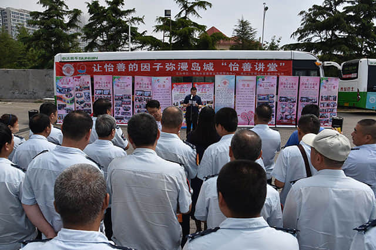
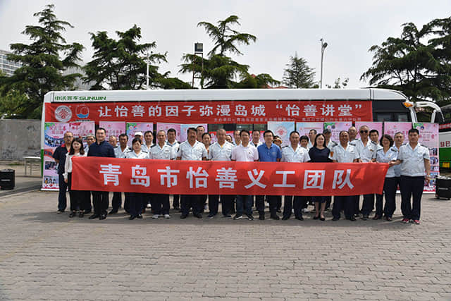
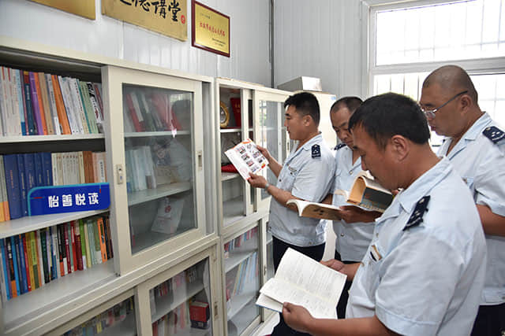

“怡善讲堂” 走进崂山巴士

2019年6月12日，青岛市慈善事业发展服务中心在青岛市慈善益站“怡善巴士”——青岛公交崂山巴士第六分公司举办了以“让怡善的因子弥漫岛城”为主题的“怡善讲堂”活动。
活动现场，来自青岛市慈善益站“怡善巴士”——青岛公交崂山巴士第六分公司316路驾驶员孟珂分享了开展公益慈善志愿服务的暖心故事；青岛市慈善益站“怡善好司机”——青岛正能量好司机爱心服务中心负责人田鹏飞讲述了近年来开展道路公益救援服务的心路历程和慈善感悟；

青岛市慈善益站“怡善情牵日喀则教育基金”——情牵日喀则教育基金民间援藏教育扶贫行动发起人、顾问宋广伟分享了本人和团队开展援藏工作的公益慈善事迹；香港中文大学博士徐从德对三位公益先模的慈心善举对促进慈善工作发展、凝聚公益慈善力量和社会和谐稳定的意义进行了点评，并针对本次活动对慈善文化融入社会主义核心价值观，激励社会成员向上、向善的积极推动作用进行了总结。

此次在青岛市慈善益站“怡善巴士”——青岛公交崂山巴士第六分公司开展“怡善讲堂”活动，是市慈善事业发展服务中心积极践行以人民为中心的发展思想，丰富“青岛市慈善益站”内涵、切实推动《慈善法》和慈善文化深入社会各界和基层群众身边的创新举措。通过将以利他主义价值观为核心的慈善文化渗透到社会建设之中，广泛凝聚慈善合力，让《慈善法》真正为民所学、为民所懂、为民所用，促进社会进步、共享发展成果，更好发挥公益慈善事业在促进社会文明进步、国家治理体系完善和治理能力提升中的积极作用。